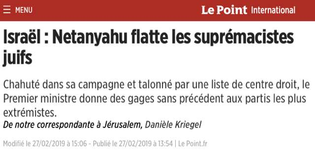
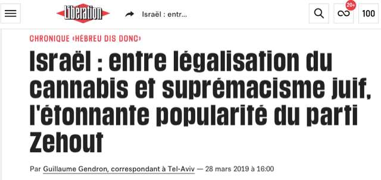
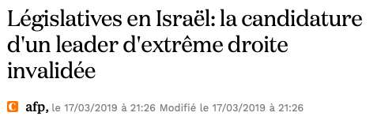

2 avril 2019 Texte repris du Blog de l’auteur.
L’article qu’on trouvera ci-après 1 illustre un phénomène inquiétant, qu’on peut décrire comme la migration de certains éléments du discours antijuif dans le lexique des grands médias français. Plus qu’un simple phénomène sémantique, il s’agit d’une évolution significative, qui illustre la radicalisation du discours sur (contre) Israël dans les grands médias français, pièce supplémentaire à verser au dossier de l’antisémitisme/antisionisme actuel.L’exemple choisi - l’expression de “suprémacisme juif” - n’est pas anodin. L’accusation de “racisme juif” (dont le suprémacisme est une forme extrême) est en effet, comme l’a démontré le politologue Pierre-André Taguieff dans ses nombreux travaux sur le sujet, un élément essentiel du discours antisémite/antisioniste contemporain. Plus précisément, c’est autour de cette accusation de “racisme juif”, aussi ancienne que l’antisémitisme lui- même, que se focalise le discours du “Nouvel Antisémitisme” apparu dans les années 2000.
[Voir Illustration 1 en fin du présent article]
Dans le chapitre intitulé “Le mythe du juif raciste” de son ouvrage magistral sur la question, La judéophobie des Modernes, Des Lumières au djihad mondial”, P.A. Taguieff analyse ainsi la place de l’accusation de “racisme juif” dans le discours antijuif contemporain:
Les Juifs se plaignant d’être victimes du ‘racisme’, il fallait encore mettre en oeuvre une stratégie de rétorsion pour neutraliser l’argument en le retournant contre les victimes… Un sixième thème d’accusation est donc entré sur la scène antijuive: celui du Juif raciste, originellement - voire originairement- génocidaire, dont le “sioniste” supposé “raciste” représenterait la dernière incarnation historique. Ce nouveau thème d’accusation peut être considéré comme une réinvention, dans le contexte planétaire de la guerre contre Israël et le “sionisme”, de l’antique accusation de xénophobie/misanthropie, amalgamée à celle de barbarie… L’apparition de cette figure négative du Juif dans l’espace mondial a été l’occasion d’une cristallisation de toutes les représentations judéophobes...
C’est dans ce contexte qu’il faut situer et analyser l’usage de l’expression “suprémaciste/suprématisme juif” dans le discours antijuif contemporain. On la retrouvait jusqu’à récemment chez de nombreux porteurs de l’idéologie antijuive, de Soral à Dieudonné en France, à David Duke aux Etats-Unis. Son adoption par les correspondants en Israël de grands quotidiens français n’est pas un fait anodin 2. J’ajoute que l’exemple analysé ci-dessous n’est pas le seul. On pourrait citer aussi celui d‘apartheid (récemment utilisé dans les médias français au sujet de la loi Israël-Etat nation du peuple juif)
P. Lurçat
Jamais cette expression n’avait été utilisée dans la presse. Elle se retrouve soudain appliquée à propos de deux politiciens de droite radicale, membres de partis différents, aux idées virulentes contre les Arabes mais actifs de longue date dans la vie politique israélienne. L’innovation sémantique, qui s’est répandue dans quatre quotidiens français, en l’espace de quelques semaines, met aussi en lumière la rapide circulation des idées et des innovations sémantiques au sein du petit monde des correspondants de presse qui oeuvrent en Israël. En Israël comme ailleurs, il existe des courants politiques radicaux. Il ne s’agit pas ici de défendre des politiciens de droite radicale, mais de signaler l’adoption soudaine d’un qualificatif inadapté pour les décrire.
Le suprémacisme est « une idéologie de supériorité et de domination: elle affirme qu'une certaine catégorie de personnes est supérieure aux autres et doit les dominer ou les asservir, ou est en droit de le faire » ; on le décrit aussi comme une « idéologie raciste qui affirme qu'il existe une hiérarchie entre les êtres. » L'accusation de « suprématisme juif », dont il est question ici, n’est pas anodine: elle rappelle la vieille antienne du « Juif raciste » qui est un élément central de l’antisémitisme contemporain, comme l'a montré Pierre-André Taguieff. On se souvient de la résolution 3370 adoptée par l’ONU en 1975, avant d’être abrogée en 1991, qui avait condamné « le sionisme » comme une « forme de racisme et de discrimination raciale » [3].
Le 21 février, le correspondant du Monde en Israël parlait d’un petit parti israélien, Otzma Yehudit, en évoquant à propos de la tentative d’alliance du Premier ministre Benjamin Nétanyahou avec ce parti « une chance réelle à cette formation suprémaciste juive d'entrer au Parlement ». D’après nos recherches, il était sans doute le premier journaliste à parler de « suprémaciste juif » dans un grand quotidien français. Quelques jours plus tard, la correspondante du Point à Jérusalem, Danièle Kriegel, remettait à l’honneur le terme, placé pour la première fois dans un titre d’article :
[Voir Illustration 2 en fin du présent article]
Otzma Yehudit est l’héritier du parti d’extrême droite « Kach » du rabbin Meïr Kahane qui fut dans les années 90 interdit pour cause d’incitation au racisme. L’article de Danièle Kriegel relatait comment la Cour suprême avait exclu des élections un candidat de ce parti aux législatives israéliennes, Michael Ben-Ari, en lui reprochant une attitude raciste. Thierry Oberlé, correspondant du Figaro, reprit ensuite le terme à son compte :
[Voir Illustration 3 en fin du présent article]
L’innovation a rapidement fait tache d’huile. Fin mars, à son tour, le correspondant de Libération, Guillaume Gendron, s’est mis à utiliser ce langage – pour parler d’un autre candidat :
[Voir Illustration 4 en fin du présent article]
Aux yeux de Guillaume Gendron, c’est Moshe Feiglin, candidat du parti « Zehout », qui mérite ce qualificatif.
Michael Ben Ari et Moshe Feiglin ne sont pas des nouveaux venus. Ils ont tous deux servi comme députés à la Knesset par le passé. Notre propos n’est pas ici de cautionner ou non leur politique ou le jugement de la Cour suprême. Il est clair que les deux candidats ont des positions radicales, très dures contre les Arabes. Michael Ben-Ari voudrait expulser la majorité des Arabes d’Israël et de tous les territoires disputés, qu’il aimerait annexer. Pour lui, toute personne qui « ose parler contre un Juif » doit être un homme mort, prônant sa « suppression par un peloton d’exécution comme les Arabes le comprennent le mieux… ». Il a beau avoir précisé plus tard que sa remarque s’adressait au leadership du Hamas et non à tous les Arabes et qu’il n’était « pas contre tous les Arabes, seulement contre ceux qui ne sont pas loyaux envers l’Etat d’Israël », il ne donne pas dans la modération. Moshe Feiglin, lui, est un ancien membre du Likoud qui a par la suite fondé le parti Zehout. Durant sa période au Likoud, il a même été vice-président de la Knesset, un poste très en vue; pourtant, nous n’avons trouvé aucune trace de description de ce personnage comme un suprémaciste dans les médias durant toute cette période. Moshe Feiglin, outre ses idées originales « libertariennes » évoquées par Guillaume Gendron, voudrait lui aussi « aider » les Arabes à émigrer dans les pays voisins (non seulement ceux des territoires disputés, mais aussi ceux qui sont aujourd’hui israéliens…).
Le Ku Klux Klan, le nazisme, l’apartheid sont des idéologies qui ont prôné la supériorité raciale d’un groupe sur un autre. Plutôt qu’une supériorité raciale juive, il semble qu’Otzma Yehudit et Zehout préconisent une séparation – un « chacun chez soi »: les Juifs en Israël, les Arabes dans les pays alentours où ils disposent du droit à l’auto-détermination… On peut tout à fait réprouver cette idée – c’est d’ailleurs le cas de la majorité des électeurs israéliens qui sont peu nombreux à soutenir ces partis. Mais le terme de « suprémacisme » n’est sans doute pas le plus adéquat. Cela n’empêche pas des adversaires politiques de Michael Ben Ari de penser qu’il « croit à la supériorité de la race ». Dans une dépêche de l’Agence France-Presse (AFP), on lit en effet que « Tamar Zandberg, à la tête du parti de gauche Meretz, a affirmé dans un communiqué que "la place des gens qui croient à la supériorité de la race est derrière les barreaux et pas au Parlement".» Pour autant, si elle a rapporté l’opinion de la cheffe du Meretz qui a œuvré devant le tribunal pour l’interdiction de Michael Ben Ari, l’AFP s’en est tenue à qualifier ce dernier de « leader d’extrême droite », ce qui correspond certainement à son positionnement sur l’échiquier politique israélien.
[Voir Illustration 5 en fin du présent article]
En tout état de cause, une recherche de l’expression de « suprémacisme juif » sur Google semble indiquer que son utilisation par des médias généralistes francophones est inédite. Jusqu’alors, elle était l’apanage de sites soraliens ou musulmans radicaux. C’est aussi le titre d’un ouvrage de David Duke, véritablesuprémaciste blanc et ancien chef du Ku Klux Klan… Ceux qui veulent diaboliser les Juifs doivent être ravis que plusieurs grands quotidiens donnent soudain du crédit à la thèse jusqu’alors marginale de l’existence d’une tendance « suprémaciste juive ». Ils ne manqueront pas de s’en servir pour tenter de dénigrer l’ensemble des Juifs (oubliant que certains des plus virulents adversaires d’Israël, comme le Hamas ou le Hezbollah, pourraient sans doute bien davantage être qualifiés de suprémacistes, d’autant que ces courants sont beaucoup plus influents qu’Otzma Yehudit et Zehout ne le sont en Israël).Les journalistes ont la responsabilité de peser les mots. Ils ont failli sur ce plan en adoptant soudainement un vocable aussi controversé.
[Illustration 1] [Illustration 2] [Illustration 3] [Illustration 4] [Illustration 5]



Texte mis en ligne par Menahem Macina sur le site Academia.edu, le 3 mars 2019
1L’auteur est un professionnel des médias, qui a choisi de garder l’anonymat. ↩
2Il n’est pas non plus anodin que l’une de ces correspondants soit Danièle Kriegel, épouse de Charles Enderlin, l’auteur de la calomnie Al-Dura, que le professeur Richard Landes a qualifiée de “première accusation de crime rituel du vingtième siècle”... Cela fait beaucoup pour une seule famille. [3] Voir « Sionisme égale racisme: 21ème anniversaire d'une résolution scélérate de l'ONUSionisme égale racisme: 21ème anniversaire d'une résolution scélérate de l'ONU ». ↩